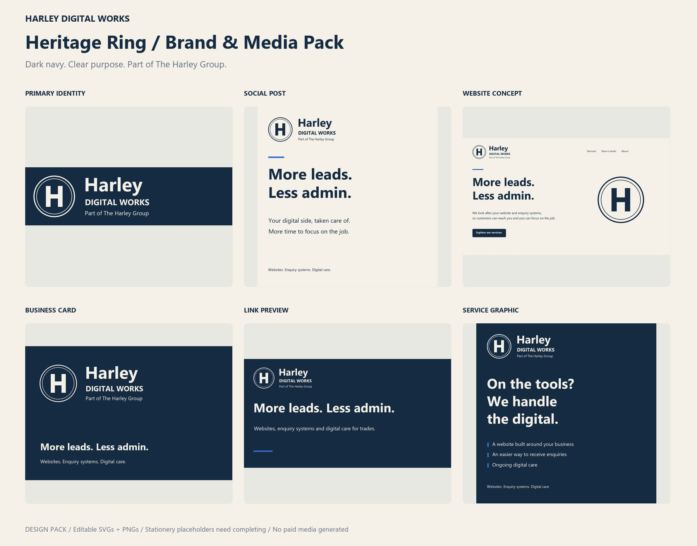

HARLEY DIGITAL WORKS / HERITAGE RING
More leads.
Less admin.
Brand and media pack · Prepared 21 October 2026

The identity
The selected number 3 Heritage Ring mark uses an H within two fine circles. It is a maker’s
signature and group identity, never an independent certification. The double ring is retained
in the primary mark; the single-ring screen icon is an intentional small-size adaptation.
Logo use
Use the primary endorsed logo where space allows. The compact version omits the provenance
line for constrained placements; put the provenance elsewhere on the page where useful. Keep
clear space of at least one H-stem width around the mark. Minimum recommended screen widths:
primary 320px; compact 200px; symbol 48px. Use the supplied simplified icon below 48px. These
are practical starting rules; check actual legibility.
Do not stretch, rotate or add shadows to the logo. Do not insert the headline into the ring,
add “approved” text or combine it with third-party accreditation badges.
Colour & typography
Navy #152B42 is the primary. Ivory #F5F1E8 is the warm background. Blue #356DCC is a
restrained accent; white #FFFFFF supports digital layouts. Use navy text on ivory, or
ivory/white on navy. Prefer white over blue for blue buttons. Avoid small blue text on ivory
until contrast is checked.
Segoe UI Bold for headings and the wordmark; Segoe UI Regular for body and provenance. Font
files are not bundled. Main SVG assets use outlined lettering and do not need installed fonts.
Editable-text originals are in 07-Editable-Text-SVGs and need Segoe UI installed. PNGs
preserve the supplied appearance.
Messaging hierarchy
Harley Digital Works
Part of The Harley Group
More leads. Less admin.
We look after your website and enquiry systems, so customers can reach you and you can focus
on the job.
The headline expresses the intended benefit. It is not evidence of increased leads or a
guarantee. Use clear service descriptions, not invented results or accreditations.
Included media
Primary, compact, stacked and symbol logos; navy, white and black versions; transparent PNGs;
SVG masters; small icons and favicon; avatar; three square social posts; story/reel cover;
company banner; link preview; four carousel slides; website hero concept and ring background;
business card front/back; A4 letterhead and proposal cover; email signature template; captions
and CSS colour tokens.
Keep critical social content away from crop areas. The company banner has not been tailored to
every platform’s profile-picture overlay; preview before publishing. Story text is inset from
the top and bottom for typical controls. Platform crops vary.
Stationery and editing
Card artwork is 85 × 55 mm at trim. A4 artwork follows the A4 ratio. SVG files provide
scalable artwork; PNGs are screen/raster companions. These are RGB designs, without printer
bleed, crop marks or CMYK conversion. Have your printer prepare a print-ready proof. Replace
every bracketed placeholder with verified details; add applicable legal details before
business use.
SVG files open in vector design tools and browsers. Editable-text typography may shift if
Segoe UI is unavailable; outlined SVGs remain fixed. The website image is a static design
concept, not an implemented website. No photos, video, paid generations, publication or site
changes are included.
Start with these files